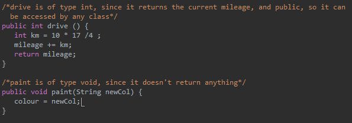

Classes
Object oriented programming is a model of programming based around classes. Classes are like the blueprints of OOP. They contain instructions for what the methods and variables contained therein should do when called. Normally, they can't actually do anything, and instead describe what should happen. For example, the concept of a 'car' would be a class.
An example of a class Car, with nothing defined yet
Variables
Variables are like the attributes of the class. For example, the attributes of class 'car' could include its name, make, colour, and mileage.
Variables hold data, and allow the class to access the data that they're storing.
In Java, there are many different types of variables. The descriptors that precede the variable name when it is declared tell the program what type of variable it is. Variables can be categorized based by:
- The type of data they store (e.g. 'int' for whole numbers, 'String' for strings, or 'boolean' for true/false values)
- How accessible they are (private, which means that they can only be accessed by objects of the class they're defined in, or public, which means that they can be accessed by any class)
- Whether they can be changed or not (final, if they can't be changed)
- Whether they're tied to the class or the object (static, if they are tied to the class)

Examples of different types of variables
There are also two different kinds of variables based on where they are declared. Variables that are declared outside of the methods are called instance, or global variables. They are able to be accessed and changed by any method in the class. Variables that are defined inside of a method, on the other hand, can only be used by the method they were declared in. Those variables are called local variables.
Examples of local and instance variables
Methods
Methods are like the behaviours of a class. They describe what the class can do with those variables. For example, in a class car, there would be a method called drive, which increases the mileage, or a method called paint that changes the colour.
Like with variables, methods are defined by their accessibility, whether they can be changed or not, and whether they are tied to the class or the object. They are defined in the same way. They are not, however, defined by what type of data they store, since they do not store data. Instead, they are defined by what type of data they return. If the method returns a String, it is of type String. If it doesn't return anything, it is of type void.

Examples of different types of methods
In Object Oriented Programming, most classes have two basic types of methods, on top of the more complicated, class specific methods. These methods are called 'getter' and 'setter' methods, and allow other classes to access and change variables that are private to the current class.
Examples of getter and setter methods
Objects
Objects are what are called 'instances' of a class. They are pieces of data that do the things that Classes describe. If Classes are like blueprints, Objects are the things created by the blueprint. While a class is like a category of thing, a descriptor of the things that are common to members of the category, an object is a member of that category. For example, while the concept of a 'car' is a class, a 2003 Honda Civic would be an object.
Examples of 2 objects, myCar and yourCar